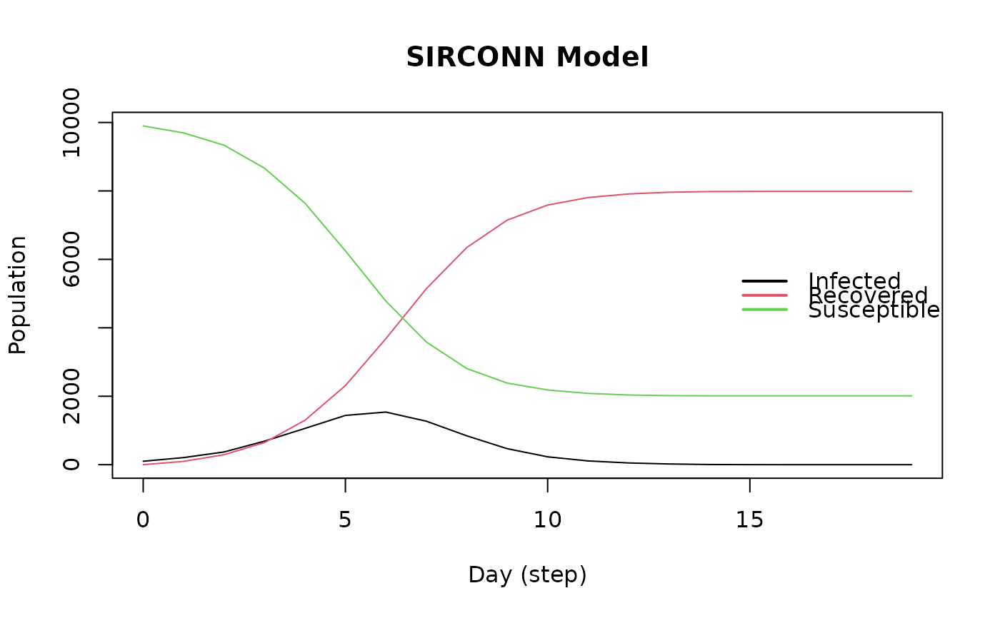

Susceptible Infected Removed model (SIR connected)
Arguments
- name
String. Name of the virus
- n
Number of individuals in the population.
- prevalence
Double. Initial proportion of individuals with the virus.
- contact_rate
Numeric scalar. Average number of contacts per step.
- transmission_rate
Numeric scalar between 0 and 1. Probability of transmission.
- recovery_rate
Numeric scalar between 0 and 1. Probability of recovery.
- x
Object of class SIRCONN.
- main
Title of the plot
- ...
Currently ignore.
Value
The
ModelSIRCONNfunction returns a model of class epiworld_model.
The plot function returns a plot of the SIRCONN model of class
epiworld_model.
Details
The initial_states function allows the user to set the initial state of the model. In particular, the user can specify how many of the non-infected agents have been removed at the beginning of the simulation.
See also
epiworld-methods
Other Models:
ModelDiffNet(),
ModelSEIR(),
ModelSEIRCONN(),
ModelSEIRD(),
ModelSEIRDCONN(),
ModelSEIRMixing(),
ModelSIR(),
ModelSIRD(),
ModelSIRDCONN(),
ModelSIRLogit(),
ModelSIRMixing(),
ModelSIS(),
ModelSISD(),
ModelSURV(),
epiworld-data
Examples
model_sirconn <- ModelSIRCONN(
name = "COVID-19",
n = 10000,
prevalence = 0.01,
contact_rate = 5,
transmission_rate = 0.4,
recovery_rate = 0.95
)
# Running and printing
run(model_sirconn, ndays = 100, seed = 1912)
#> _________________________________________________________________________
#> Running the model...
#> ||||||||||||||||||||||||||||||||||||||||||||||||||||||||||||||||||||||||| done.
#> done.
model_sirconn
#> ________________________________________________________________________________
#> Susceptible-Infected-Removed (SIR) (connected)
#> It features 10000 agents, 1 virus(es), and 0 tool(s).
#> The model has 3 states.
#> The final distribution is: 2012 Susceptible, 0 Infected, and 7988 Recovered.
plot(model_sirconn, main = "SIRCONN Model")
